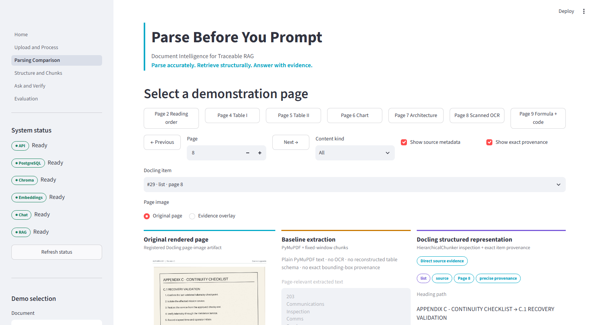
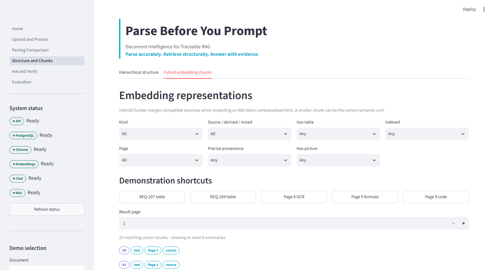
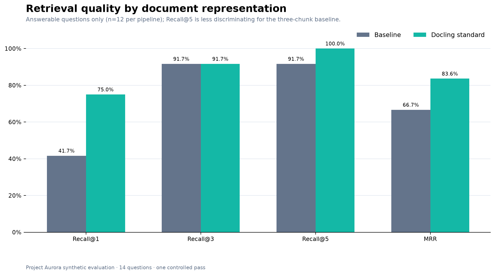
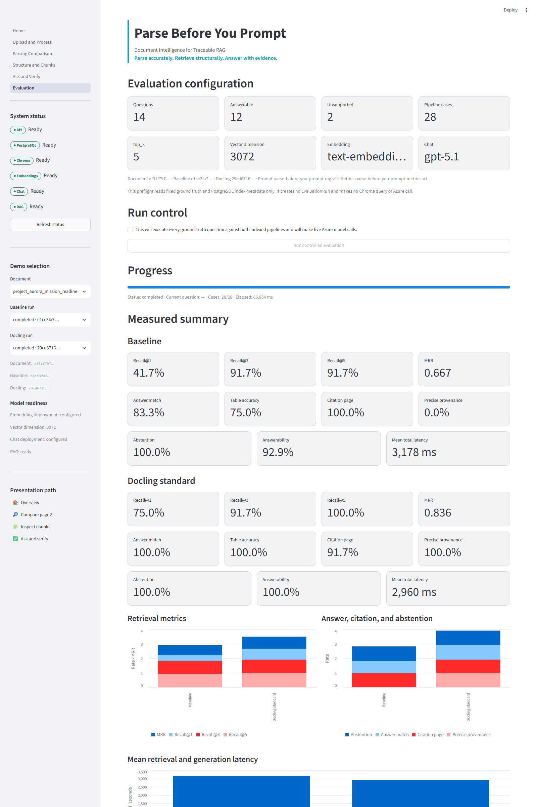
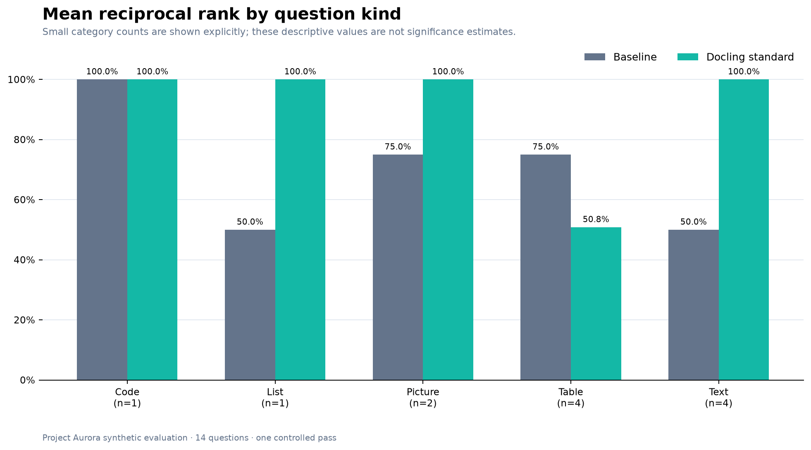
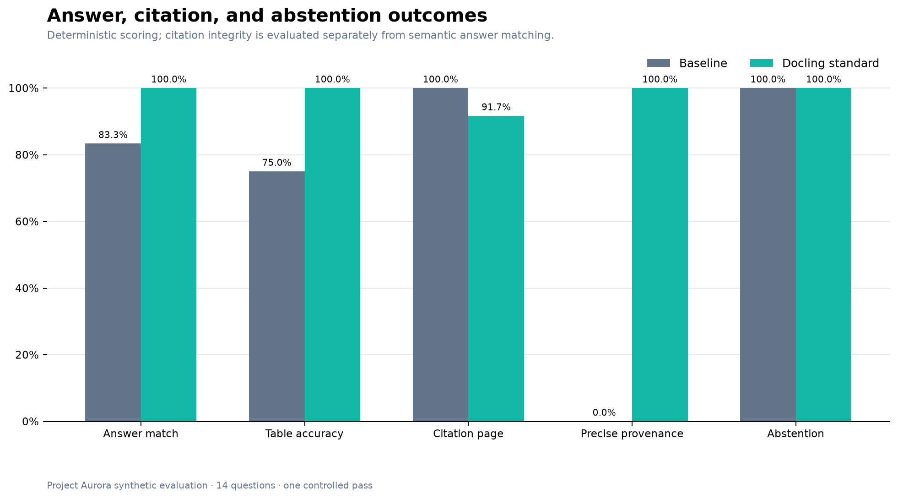
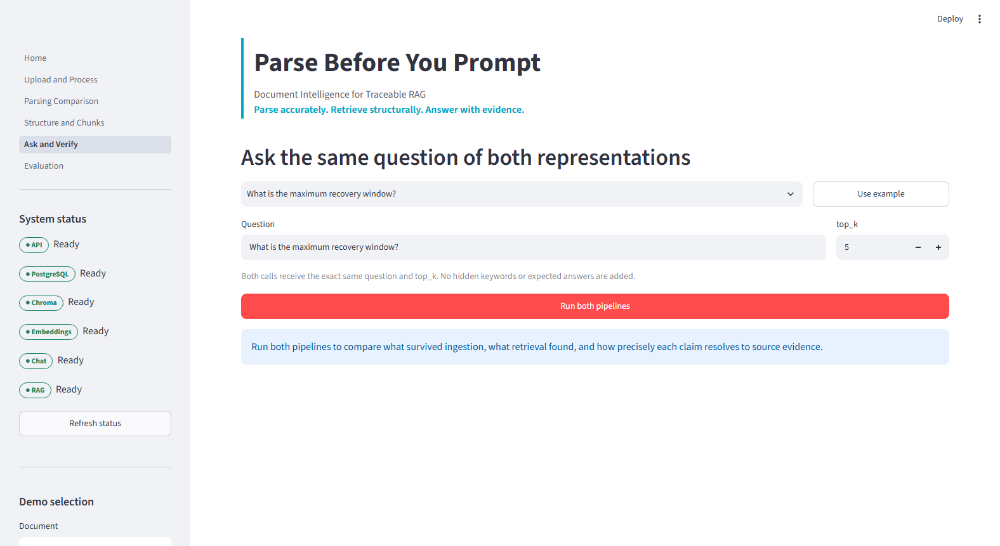
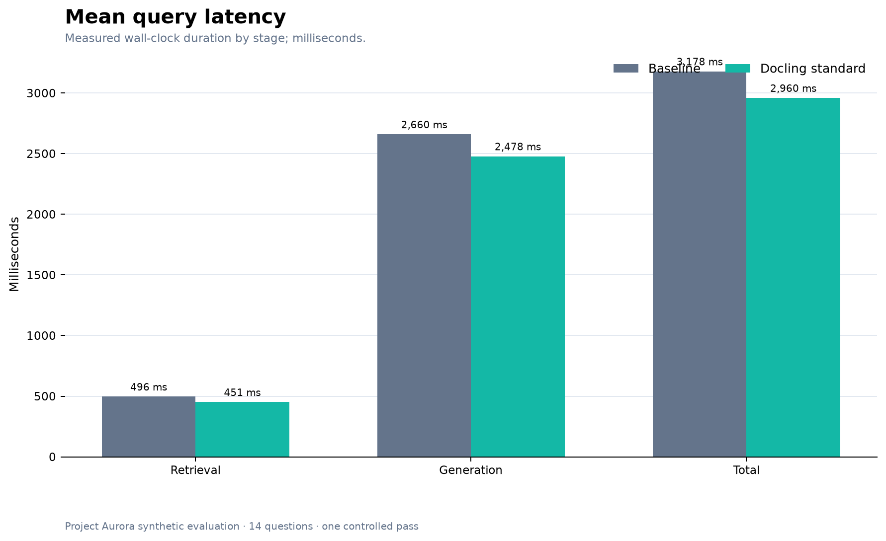

A RAG system cannot retrieve information that parsing failed to preserve. Parsing is not plumbing; it is the first knowledge-modeling decision.
The model never sees the document you see.
Teams often tune prompts, swap models, or add retrieval tricks before inspecting the representation entering the index. People see headings, tables, captions, scans, and diagrams. A model sees extracted text, chunks, and metadata. Once OCR text, row-to-column relationships, or page locations disappear, a downstream model cannot reliably reconstruct them.
Project Aurora isolates that hidden layer. The same synthetic ten-page PDF went through a PyMuPDF baseline with three fixed windows and a local Docling standard-quality path. Downstream controls were identical: text-embedding-3-large, 3,072 dimensions, Chroma cosine distance, top-k 5, GPT-5.1, the same prompt, schema, validator, abstention contract, and retry policy.

Structure survived as addressable evidence.
The local Docling standard pipeline used Heron layout, RapidOCR, TableFormer Accurate, Document Figure Classifier v2, Granite Vision 3.3 2B derived descriptions, and CodeFormulaV2.
Docling’s DoclingDocument retained typed headings, paragraphs, tables, pictures, captions, and provenance. HierarchicalChunker produced 47 inspection chunks; HybridChunker produced 25 contextualized vector chunks. Ten peers merged, none split, and the maximum contextualized size was 364 tokens under the 800-token ceiling.
Local OCR recovered a “15 minutes” fact absent from baseline extraction. Structured tables retained REQ-207 and REQ-209 associations. Pictures and captions remained addressable, while generic picture descriptions stayed explicitly labeled as derived content—not verbatim evidence. Stored page and bounding-box provenance connected chunks back to source regions.

For REQ-205, structured conversion preserved the Navigation + Analysis association that the baseline answered incorrectly. The runtime boundary is browser to Streamlit to FastAPI; FastAPI owns PostgreSQL, parsing, externally supplied Chroma vectors, Azure providers, and local artifacts.
Rank one changed more than rank five.
Fourteen ground-truth questions—12 answerable and two unsupported—ran once against both indexes. Strict relevance required expected-page overlap and all normalized expected terms; a broad baseline page range alone did not pass. Answers used deterministic matching against complete accepted alternatives. No LLM judge, reranking, evidence injection, or selective rerun was used.

Docling’s Recall@1 was 75.0% versus 41.7%; MRR was 0.836 versus 0.667. Recall@3 tied at 91.7%, while Recall@5 was 100.0% versus 91.7%. Recall@5 is less discriminating because baseline contains only three broad chunks. The decisive miss was OCR: baseline could not retrieve a fact its representation never contained.


Better overall, not perfect everywhere.

Docling matched 12 of 12 answerable alternatives; baseline matched 10, or 100.0% versus 83.3%. Table-answer accuracy was 100.0% versus 75.0%. Both branches correctly abstained on both unsupported questions and achieved 100% citation-ID/structure integrity among supported answers.
The caveat matters: baseline citation-page accuracy was 100% across 11 supported answers, while Docling scored 91.7% because one correct table answer did not cite an expected page for every claim. Baseline also beat Docling on table-category MRR, 0.750 versus 0.508. Yet baseline’s source locations were broad ranges and precise provenance remained 0%; Docling supplied stored bounding boxes for every supported answer. Citation integrity is not entailment, and provenance does not eliminate hallucination. It makes verification possible.

Slower preprocessing, leaner questions.

Mean total query latency was 2,960 ms for Docling and 3,179 ms for baseline. Total chat tokens were 15,325 versus 33,974 because Docling’s retrieved evidence averaged 495 tokens rather than 1,913. But preprocessing was costly: Docling conversion and chunking took 1,954,758 ms—about 32.6 minutes—on CPU, compared with 52 ms for baseline extraction. These timings describe one quality profile on one document, not a throughput benchmark.
Local documents; approved hosted text calls.
Docling runs locally with remote services disabled. Original PDFs and visual artifacts remain local. Contextualized chunk text is sent to the configured embedding deployment; query text is embedded there; the question and retrieved textual evidence are sent to GPT-5.1. It would be inaccurate to claim no data leaves the machine—the boundary is selective and explicit.
This is evidence, not a universal ranking.
- One synthetic ten-page document and one completed pass.
- Heading reconstruction was not perfect.
- Some vertical table merges were not reconstructed.
- Picture descriptions were generic derived aids.
- Header repetition was configured but not exercised.
- CPU conversion was slow.
- Citation integrity does not prove entailment.
- Provenance does not eliminate hallucination.
- Granite-Docling-258M was intentionally not evaluated.
Reproducible by design.
Explore the runnable companion repository at continuumresourcesllc/parse-before-you-prompt.
All numeric findings come from one completed controlled Project Aurora evaluation. Results are descriptive and imply no statistical significance.